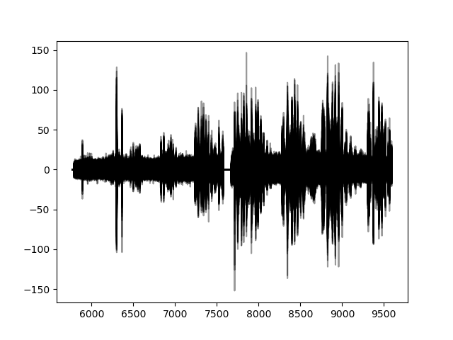
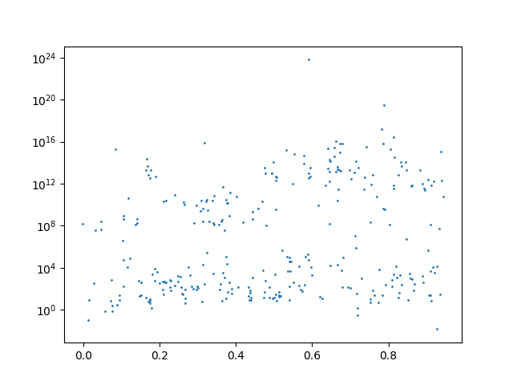

Quickstart by example
1. I want to return the number of sky spectra in a given run (runid=1002850)
from weaveio import *
data = Data()
runid = 1003453
nsky = sum(data.runs[runid].targuses == 'S')
print("number of sky targets = {}".format(nsky()))
number of sky targets = 100
We can break this down into several steps:
from weaveio import *; data = Data()- Import all the necessaryweaveiofunctions and start the default lofar database link (the default is opr3 but this may change in the future).data.- Start building a query using data connection established abovedata.runs- Get all runsdata.runs[runid]- Filter the runs to those that have their id equal to the variablerunid. Each run has a unique runid, so you can be sure that this query now contains one row.data.runs[runid].targuses- Each run has multiple L1 single spectra associated with it and each of those spectra have atarguseattribute. Therefore, each run has multipletarguseattributes, therefore you must writetarguses.data.runs[runid].targuses == 'S'- Make a boolean mask for where the targuse flag for each spectrum belonging to this run is set to'S'(this refers to "sky").nsky = sum(data.runs[runid].targuses == 'S')- Sum the entire boolean mask, thereby counting the number of sky fibres placed in this run. The python functionsumwas overwritten with aweaveioversion when we did our imports.sumis now compatible withweaveiobut can also be used normally.nsky()- Up til now, we have been building a query, much like we would write SQL, but nothing has executed on the database yet. To run our query and fetch the result, we call it using the parentheses().
1b. I want to see how many sky targets each run has
from weaveio import *
data = Data()
nsky = sum(data.runs.targuses == 'S', wrt=data.runs) # sum the number of sky targets with respect to their runs
print(nsky())
[100 299 299 100 100 200 160 ...]
This query is very similar to the previous one except that we are summing over the fibres of each run, not just 1 run as before.
The difference here is that we have missed out data.runs[runid] which means that our query references all runs in the database at once.
from weaveio import *; data = Data()- Import all the necessaryweaveiofunctions and start the default lofar database link.data.runs- Get all runs.data.runs.targuses == 'S- Access alltarguseattributes belonging to each run. Read this statement as "for each run in data, for each targuse in run, do==S.nsky = sum(data.runs.targuses == 'S', wrt=data.runs)- This time sum our boolean mask with respect to (wrt)data.runs. This means each row in the resultant query,nsky, will refer to each row indata.runs. I.E. There is now a query row per run, whereas in the previous example there was only one row.
1c. Put the above result into a table where I can see the runid
from weaveio import *
data = Data()
nsky = sum(data.runs.targuses == 'S', wrt=data.runs) # sum the number of skytargets with respect to their runs
query_table = data.runs[['id', nsky]] # design a table by using the square brackets
concrete_table = query_table() # make it "real" by executing the query
print(concrete_table)
print(type(concrete_table))
id sum0
------- ----
1003453 100
1003440 299
... ...
<class 'weaveio.readquery.results.Table'> # although this is an astropy table really
[['id', nsky]].
Any string referring to an attribute (e.g. 'id') can go here as well as any previously written query (e.g. nsky').
However, any items that you put in the square brackets must align with the object outside:
For example:
* data.runs[['id', nsky]] is valid because each run has an id and the query nsky is based on data.runs (i.e. each run has an nsky calculated for it).
2. I want to plot all single sky spectra from last night in the red arm
from weaveio import *
data = Data()
yesterday = 57811 # state yesterday's date in MJD
runs = data.runs
is_red = runs.camera == 'red'
is_yesterday = floor(runs.exposure.mjd) == yesterday # round down to an integer, which is the day
runs = runs[is_red & is_yesterday] # filter the runs to red ones that were taken yesterday
spectra = runs.l1single_spectra # get all the spectra per run
sky_spectra = spectra[spectra.targuse == 'S'] # filter to the spectra which are sky
table = sky_spectra[['wvl', 'flux']] # design a table of wavelength and flux
import matplotlib.pyplot as plt
# this may take a while to plot, there is a lot of data
for row in table: # you can iterate over a query with `for` as well as requesting the whole thing with `()`
plt.plot(row.wvl, row.flux, 'k-', alpha=0.4) # standard matplotlib line plot
plt.savefig('sky_spectra.png')

The only new thing in this query is for row in table. This implicitly calls the table (table()) and downloads one row at a time.
You will want to do this when the resulting query will be large. By using this "iterator" pattern, you can avoid loading it all into memory at once.
3. I want to plot the H-alpha flux vs. L2 redshift distribution from all WL or W-QSO spectra that were observed from all OBs observed in the past month. Use the stacked data
import matplotlib.pyplot as plt
data = Data()
l2s = data.l2stacks
l2s = l2s[(l2s.ob.mjd >= 57780) & any(l2s.fibre_target.surveys == '/WL.*/', wrt=l2s.fibre_target)]
l2s = l2s[l2s['ha_6562.80_flux'] > 0]
table = l2s[['ha_6562.80_flux', 'z']]()
plt.scatter(table['z'], table['ha_6562.80_flux'], s=1)
plt.yscale('log')
plt.savefig('ha-z.png')

Let's break down this query:
l2s = data.l2stacksgets all l2stack products in the database. These are the data products which contain joined spectra and template fits.l2s.fibre_target.surveys == '/WL.*/'- This creates a boolean mask matching the survey name to 'WL.*' with regex. You can activate regex by using/at the start and end of a string.l2s = l2s[(l2s.ob.mjd >= 57780) & any(l2s.fibre_target.surveys == '/WL.*/', wrt=l2s.fibre_target)]- This filters to l2 products whose L1 observations were taken after 57780 and survey names containing "WL"l2s = l2s[l2s['ha_6562.80_flux'] > 0]- Then we further filter the l2 products by required an halpha flux greater than 0 (fit by Gandalf).l2s[['ha_6562.80_flux', 'z']]- This designs a table with the halpha flux (from gandalf) and the redshift (from redrock)
4a. Join on a 3rd party catalogue
Given a catalogue of weave cnames, find those objects in the database and return the calendar dates on which those matched objects were observed, and the number of WEAVE visits to each CNAME (there could be more than one)
To do this we need to use join which is imported from weaveio.
join takes at least 3 arguments: the first is the table to join on, the second is the column name in that table, and the third is the object in weaveio to join to.
You may also specify a join_query which is another weaveio query that results in the attribute to join to. If this is not specified, then it is assumed that the attribute should be the same as the column name in the table.
def join(table: Table, index_column: str,
object_query: ObjectQuery, join_query: Union[AttributeQuery, str] = None,
join_type: str = 'left') -> Tuple[TableVariableQuery, ObjectQuery]:
...
join is the input table converted to a weaveio variable and a reduced version of the input object_query.
The output table variable should now be treated as rows.
from astropy.table import Table
from weaveio import *
import weaveio
fname = Path(weaveio.__file__).parents[0] / 'tests/my_table.ascii'
data = Data()
table = Table.read(fname, format='ascii')
rows, targets = join(table, 'cname', data.weave_targets)
mjds = targets.exposures.mjd # get the mjd of the plate exposures for each target
q = targets['cname', rows['modelMag_i'], {'mjds': mjds, 'nobservations': count(mjds, wrt=targets)}]
print(q())
cname modelMag_i mjds [15] nobservations
-------------------- ---------- ---------------------------- -------------
WVE_10461805+5755400 20.20535 57809.109711 .. 57811.075961 15
WVE_10521675+5814292 21.2665 57809.109711 .. 57811.075961 15
WVE_10521675+5814292 21.2665 57809.109711 .. 57811.075961 15
WVE_02175674-0451074 21.38155 57640.1764 .. -- 6
WVE_02174727-0459587 21.81214 57640.1764 .. -- 6
WVE_02175411-0504122 22.28189 57640.1764 .. -- 6
WVE_02175687-0512209 21.79577 57640.1764 .. -- 6
WVE_02174991-0454427 21.65417 57640.1764 .. -- 6
WVE_02175370-0448267 19.63735 57640.1764 .. -- 6
WVE_02174862-0457336 22.181 57640.1764 .. -- 6
WVE_02175320-0508011 20.16733 57640.1764 .. -- 6
table = Table.read('weaveio/tests/my_table.ascii', format='ascii') - This reads in a custom table from the file my_table.ascii. One of the column names is cname.
2. rows, targets = join(table, 'cname', data.weave_targets) - This joins the cname column of the table to the cname attribute of the weave targets catalogue.
targets will refer to all weave_targets that were matched by the cname column and rows will refer to the rows of the table.
3. mjds = targets.exposures.mjd - This gets the mjd of the plate exposures for each target (there may be more than 1) and each exposure will have 2 l1single_spectra (one for each arm), although we don't worry about that yet.
4. q = targets['cname', rows['modelMag_i'], {'mjds': mjds, 'nobservations': count(mjds, wrt=targets)}] - This creates a table using the 'modelMag_i' found in the fits file table. This can be done because we joined it earlier.
Here we are also renaming columns to more human readable names using a dictionary.
Ragged arrays
The mjd result column is "ragged" array since there may be more than 1 exposure per target and that is not constant for each target. So that the user can aggregate easily we convert the mjd result column to a regular array and mask it.
4b. Plot sdss modelMag_i from the fits file against mean flux between 400-450nm
Continuing from 4a, we first traverse to the l1single_spectra and fetch their wavelengths and fluxes.
Then we plot the modelMag_i from the fits file against the mean flux between 400-450nm.
import matplotlib.pyplot as plt
q = targets.l1single_spectra[['cname', rows['modelMag_g'], 'wvl', 'flux', 'sensfunc']]
table = q()
mean_fluxes = []
for row in table:
filt = (row['wvl'] > 4000) & (row['wvl'] < 4500) # angstroms
mean_fluxes.append(mean(row['flux'][filt]))
table['mean_flux'] = mean_fluxes
print(table['mean_flux'])
plt.scatter(table['modelMag_g'], -2.5 * np.log10(table['mean_flux']))
plt.show()
mean_flux
---------------------
1.6613570457103553
1.8225295509082666
1.6668027617324288
--
1.8113559953805027
--
1.685038564203977
...
--
-0.07946323931008473
--
-0.012973852190988072
-0.13294200506014725
--
--
Length = 90 rows
5. For each OB at a time, retrieve all the stacked red-arm sky spectra and the single spectra that went into making those stacked spectra
from weaveio import *
data = Data()
obs = split(data.obs) # mark the fact that you want have one table per OB thereby "splitting" the query in to multiple queries
stacks = obs.l1stack_spectra[(obs.l1stack_spectra.targuse == 'S') & (obs.l1stack_spectra.camera == 'red')]
singles = stacks.l1single_spectra
singles_table = singles[['flux', 'ivar']]
query = stacks[['ob.id', {'stack_flux': 'flux', 'stack_ivar': 'ivar'}, 'wvl', {'single_': singles_table}]]
for index, ob_query in query:
print(f"stacks and singles for OB #{index}:")
print(ob_query())
stacks and singles for OB #3133:
ob.id stack_flux [15289] ... single_flux [3,15289] single_ivar [3,15289]
----- ------------------ ... --------------------- ---------------------
3133 0.0 .. 0.0 ... 0.0 .. 0.0 0.0 .. 0.0
3133 0.0 .. 0.0 ... 0.0 .. 0.0 0.0 .. 0.0
3133 0.0 .. 0.0 ... 0.0 .. 0.0 0.0 .. 0.0
3133 0.0 .. 0.0 ... 0.0 .. 0.0 0.0 .. 0.0
3133 0.0 .. 0.0 ... 0.0 .. 0.0 0.0 .. 0.0
3133 0.0 .. 0.0 ... 0.0 .. 0.0 0.0 .. 0.0
3133 0.0 .. 0.0 ... 0.0 .. 0.0 0.0 .. 0.0
3133 0.0 .. 0.0 ... 0.0 .. 0.0 0.0 .. 0.0
3133 0.0 .. 0.0 ... 0.0 .. 0.0 0.0 .. 0.0
3133 0.0 .. 0.0 ... 0.0 .. 0.0 0.0 .. 0.0
There are two new concepts in this example: query splitting and adding tables together.
- Splitting occurs with
obs = split(data.obs). Nothing special happens here except that we have now marked that any query that follows fromobswill yield more than one table. Each table will have a differentob.idvalue - We continue our query as normal
query = stacks[['ob.id', {'stack_flux': 'flux', 'stack_ivar': 'ivar'}, 'wvl', {'single_': singles_table}]]- Here we have now added thesingles_tableinto a new table we are constructing. This is equivalent toquery = stacks[['ob.id', {'stack_flux': 'flux', 'stack_ivar': 'ivar'}, 'wvl', {'single_flux': singles['flux'], 'single_ivar': singles['ivar']}]]. When renaming the additional table (with{'single_': ...}) we are added a prefix onto each of the new columns.for index, ob_query in query:-queryis now split query, so when we iterate over it we get one table for each ob.id value. It also returns an index, which in this case is just theob.idvalue.ob_queryis now identical to the originalqueryexcept that is will only return results for one OB.ob_query()- Execute the query only for the current OB (the one withob.id == index).
split is the equivalent function to group_by in pandas or astropy. However, you must perform a split before querying whereas in a pandas/astropy group_by it is done after the fact.
Also, it is important to note that the single_flux and single_ivar columns are 2 dimensional since there are 3 single spectra per stack spectrum.
So you get all 3 at once, per row of the query.